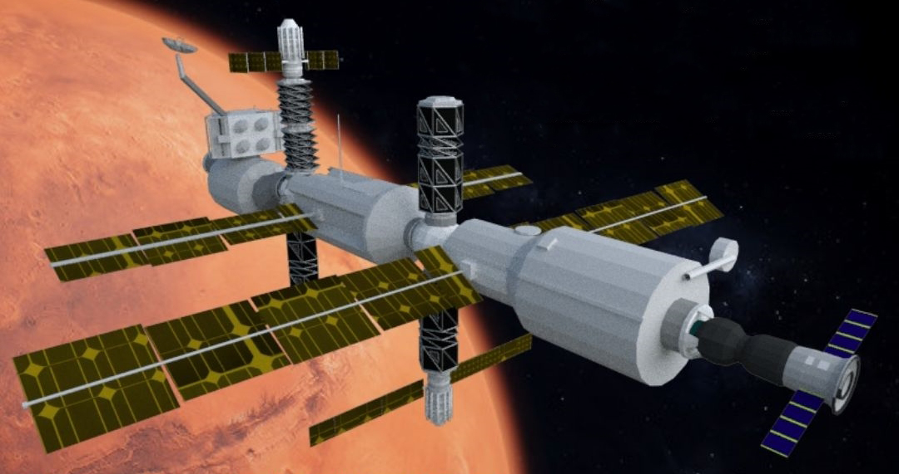
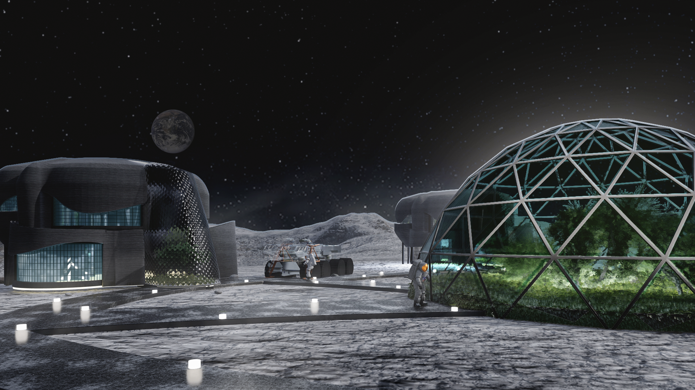

Architecture Beyond Earth
Six projects exploring habitation, energy, and human life across the Moon, Mars, and orbital space.
 🌕 Lunar Surface
🌕 Lunar Surface
Lunar Gateway Habitat
A sustainable, adaptive lunar settlement at Malapert Massif � myco-infused 3D-printed shells, modular carbon-fiber extensions, and a "Spine of Life" layout connecting habitation, research, and greenhouse ecosystems.
Explore Project → 🔴 Martian Terrain
🔴 Martian Terrain
Voltaris Spire
An Earth-based analog research hub for astronaut training located in the Martian-like terrain of Kutch, Gujarat. Featuring R&D labs, analog training modules, observatories, and public outreach spaces � rooted in cosmic geometry and sustainable design.
Explore Project → ✨ Orbital
✨ Orbital
Wardencliffe Aeon
Interlinking ancient technologies with modern science � a study that analyzes historical artifacts and scientific principles to bridge ancient technological wisdom with contemporary space architecture methodologies.
Explore Project →
🛸 ISS AttachmentH.O.M.E.
An attachment module designed to reduce space shuttle payload weight by encompassing all crew necessities and recreation facilities within itself � serving both as an ISS attachment during halt and a mission module during transit.
Explore Project →
🌕 Lunar LivingChandravaas
A human-centered lunar habitat capitalizing on lunar materials and advanced technologies � integrating hydroponics, meeting areas, recreational spaces, and bedrooms meticulously crafted to align with human psychology and well-being.
Explore Project → 🌕 Lunar Analog
🌕 Lunar Analog
Lunome
A secure and stimulating Lunar Analog Base � its name symbolizing a chain connecting Earth to outer space. An origami-inspired, anthropocentric design tackling sensory monotony, transportability, and the human toll of long-duration space missions.
Explore Project →